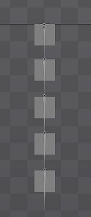

Spine-Unityの物理演算でHinge Joint2Dが正しく演算されない
概要
公式ブログのspine-unity 2Dおよび3D物理演算に沿って物理演算をSpineのモデルに適用したのですが、ハマったことがあったので書いておきます。
サンプルとして以下の図のように縦にボーンを連結したものを用意し、物理演算を仕込んでいきます。

Hinge Joint 2D だとうまくいかないケース
公式ブログによるとUnityのHinge Jointを使用して物理演算を適用するようです。
ブログの手順に沿って生成する際、Hinge Joint 2Dか Hinge Joint 3Dか選択するフェーズがあります。
Spine自体が2Dですし、2Dを選択したくなるのですが、2Dを選択した場合、うまく行かないケースが2つありました。
- まず、下記のように再生すると自動的に曲がっていってしまうケース
- 左右の向きを変更した瞬間、回転が加わりおかしくなるケース
公式フォーラムで質問されている「Cape physics issue when flipped」と同じケースです。
詳しい現象はフォーラムに動画があるのでそちらを参照してください。
解決策
上記フォーラムの回答でHinge Joint 3Dを使用することが勧められています。
実際、サンプルシーンとして同梱されている「SkeletonUtility Platformer HingeChain Physics」シーンでは、モーニングスターとマントがHinge Joint 3Dで実装されています。
その上、2Dだと向きによってHinge Joint 2Dが2セット生成されて設定しづらいという点もあり、3Dだと1セットで済むので楽です。
Hinge Joint 3D で実装する
Hinge Joint 3Dで実装すると無事、モデルの位置を左右に振ると、物理的にぶらぶら揺れるようになりました。
まとめ
今回実装した範囲では、Hinge Joint 2Dを使用することができず、またメリットも見出すことができませんでした。
現状、私はHinge Joint 3Dで実装する方法を採用していきます。
使用バージョン
Unity 2020.3.11
Spine 4.0.24